USNA Support
USNA Support

for the Flight of N8PK-11 Balloon
Bob Bruninga, WB4APR
USNA Support
Bob Bruninga, WB4APR
BACKGROUND: 24 July 2007, USNA Satllite lab was requested to provide integration and tracking help and services for the NASA Space Camp called "Reach for the Stars" at the University of Maryland Eastern Shore facility. This web page is a quick throw-together of the images and experiences. The key events we were involved with were the Direction-Finding techniques used in the recovery of one of the CRICKETsat balloons, and then on Launch day of the final and most exciting event, the integration, launch and recovery of the much larger APRS payload Balloon, N8PK-11. Please see the official SIMSAT web page
This first image is one of the 7 Cricketsats built by the students.
This one was assembled for a water landing (high probability in our area) by placing it in a lightweight water bottle. The black plastic bag on the left serves as a"streamer" to slow its descent.
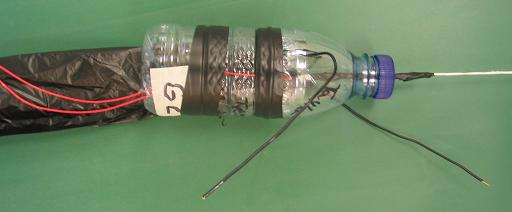
The team prepared the simsat for launch on 24 July 2007 using a small WXX balloon.
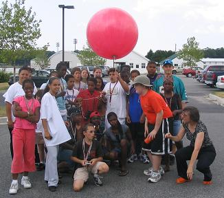
DIRECTION FINDING RECOVERY of CRICKETSAT: .
The Space Camp team had planned on a launch-and-forget approach to the smaller expendible cricket sats. These simulated satellites consisted of a matchbox size transmitter (think key-chain FOB transmitter) and 9v battery. The only telemetry was temperature. But from temperature and thermal gradient knowledge, one can infer altitude.
No direction finding was planned, so no DF gear was on hand. After the days launch activities were over and several small simsats were launched, we thought it would be fun to go see if we could find one. We chose to go look for the one called Cricketsat G2, since it appeared to only have a 45 minute flight life before it was heard to descend. This suggested that it was not that far away..
To a ham radio enthusiast Direction Finding is a cause for a challenge. We wanted to go see if we could find one anyway, with nothing but our hand held walkie-talkie. We used what the Hams call, the fade-circle technique. This is a cimple technique for just this kind of as-you-are recovery effort.
The Process is simple: All you need is your mobile rig and an HT and some greay matter between the ears, and you can find anything. Almost as easy as driving right to it (and back and forth a bit). Just visualize signal strength, and always go to the middle of your maximum signal along any line of travel. Then turn 90 degrees and again go to the middle of the signal maximum, turn 90 degrees again, and repeat, and repeat. As signal gets stronger, switch to HT. As signal gets stronger, switch to paper clip antenna and repeat. As signal gets stronger, switch to one INCH piece of paper clip in HT antenna jack and repeat. As signal gets stronger, remove antenna completely and repeat. ETC. Finally, reach out an pick up the transmitter. Done.
The images below chronicle my approach at finding this payload. The relative signal strength is shown by colored dots as I drove (and then walked ) to find the balloon.
TECHNIQUE: Remember, we had NO POSITION INFO at all. All we knew was that the key-chain transmitter on 433 MHz was last heard approximately NORTH of the launch site. . Ignore the BLOON-2 OBJECT you see on this APRS tracking web page. It was placed on the map only after we had found the general area of the landing. This object was uset to mark our location we got out of the car to start our foot search. This symbol allerted launch control where we were beginning our foot search.
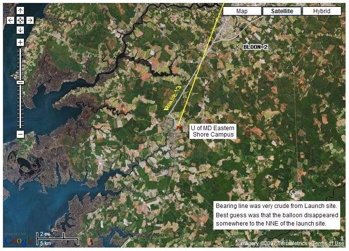
The above image shows our initial drive from launch site with our mobile radio along track line north of the launch site. We had no idea where the balloon was or how far! The next image shows our first weak detections along the highway:
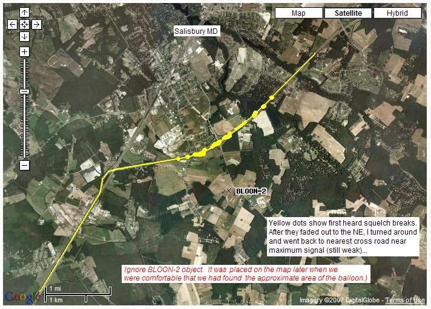
Next shows a plot of my first perpendicular driving leg
(after going north and then turning south) by car
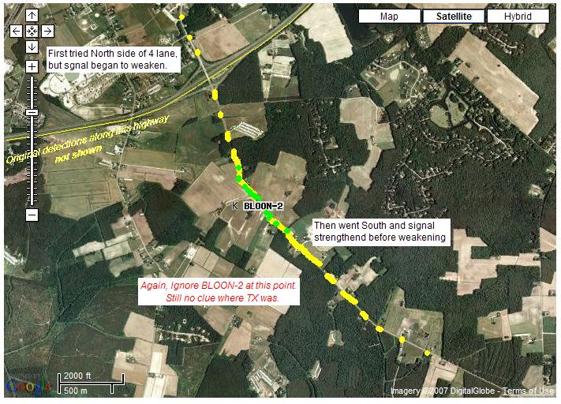
The next shows the second Perpendicular leg by car (no more roads):
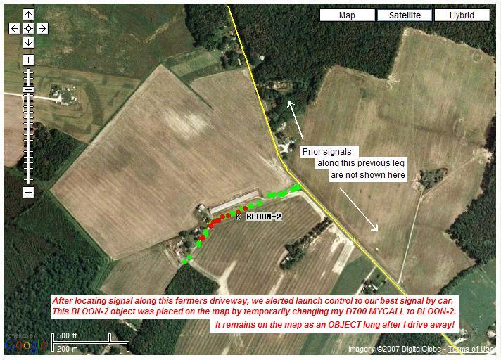
This next slide shows the first HT results and confusing circling in
the farmers backyard clearing while we tried to visualize how the
signals were arriving:
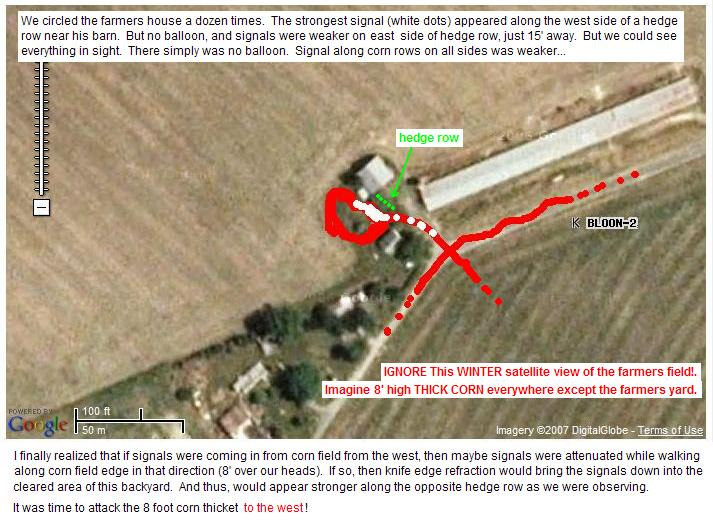
And here is the final image of the assault on the corn field!
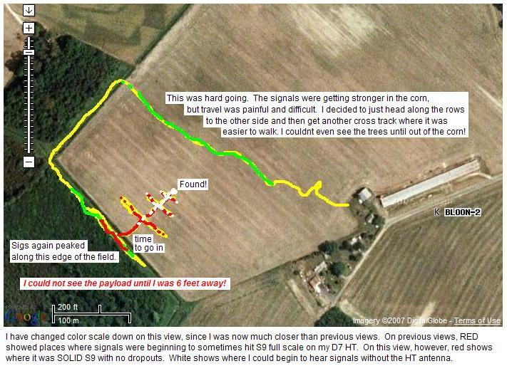
YOU CAN DO IT. Anyone can, and you don't need any DF equipment. Just your mobile, your HT, and a signal to find! (works at ANY range. Just depends on how much gas you have in the tank, and how far you are willing to walk once you get to HT range.
This final picture shows what the Cricket sat looked like when found. I could not even see it until I was one corn row away! Also shown is a closeup of the postcard that was attached to this Cricketsat.
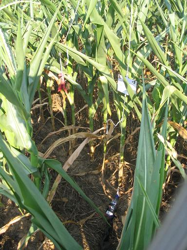 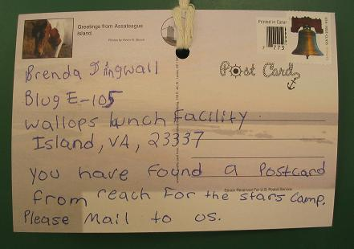
FULL SIZE APRS BALLOON LAUNCH: On the next day, the Space Camp planned to launch their final (large) balloon experiment. This balloon would carry four separate experiments consisting of two tiny Cricketsat, and PicketSat devices, both on 433 MHz, and a much larger APRS payload carrying a GPS for easy position tracking. In addition, a standard NASA radiosonde (GPS) was also attached. In the photo below, you can see the prepared balloon, and the foam box carrying the APRS payload and the Cricketsat and PicketSAT payloads.
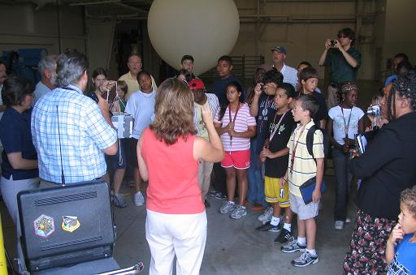
This payload went to over 100,000 feet (20 miles) and came down about 35 miles north of the launch site. The winds showed a significant change in direction at altitude as shown in the APRS track below. I leisurely headed up US-13 to State-404 to be in the vicinity of the predicted landing spot. But the payload came down much more quickly than I had imagined. I had to backtrack to the last reported position.
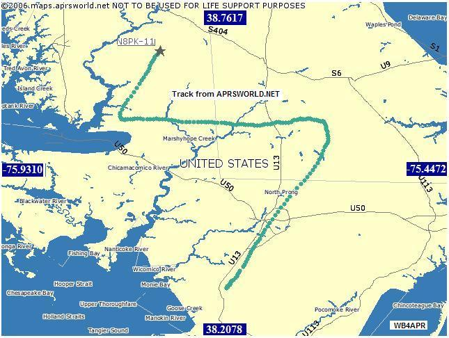
The following photo shows the landing site. The payload was easily tracked due to its onboard GPS, but with only one report every 40 seconds, the last report was at 700 feet. On crashing, the GPS stopped working, and so, like before, we had an idea what field it was in, but not where!
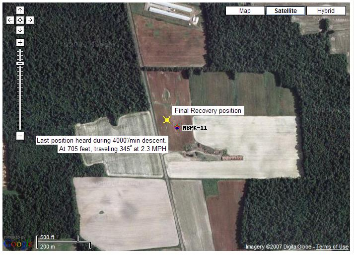
Looks easy. Not far from the last known position, except for one important thing. This view was only available to the arm-chair kibitzers watching on the internet. Being in the field, I couldn't see this image. I was surrounded by summer crops and trees. This next image is what my arrival in the area looked like, and my first signals listening to the cricketsat signal.
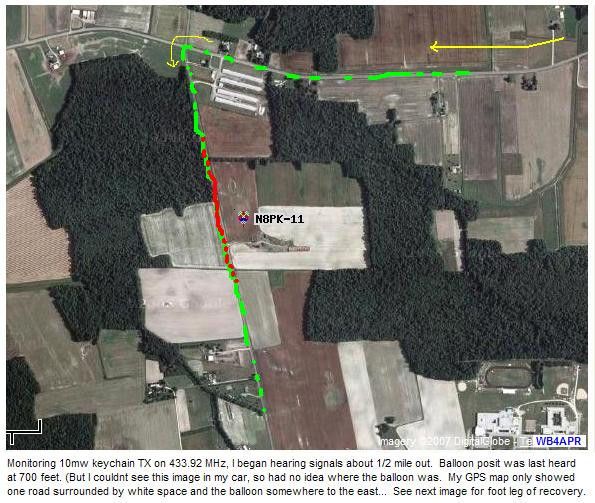
The next image shows again, the perpendicular legs I took with my handheld radio to try to narrow down where the signals were coming from.
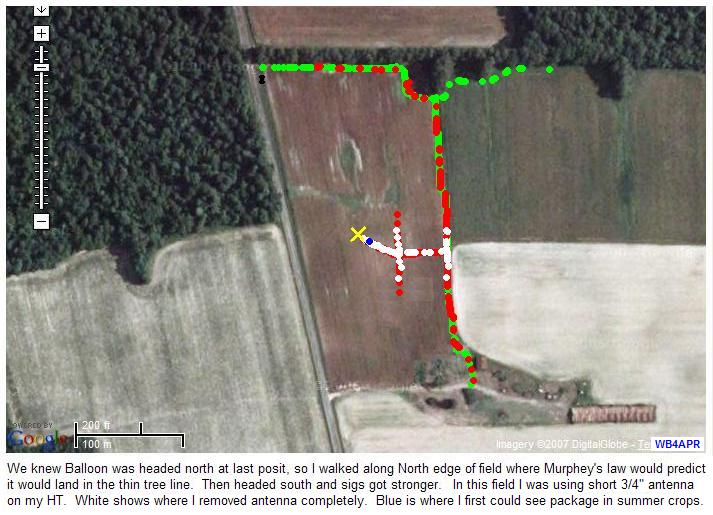
Remember, from my perspective in the field, all I knew was that the "last posit" heard at 705 feet was somewhere out in this field. Notice the surrounding trees! Sure I had GPS in my car, but the map at this scale was blank other than the road I was on, Oh, also, on impact the GPS begain outputting 0000.00/00000.00 positions! So, here again, I had to use the HT to find the transmitters.
Even though the field was only covered in 1 foot tall plants, the flight hardware was not visible until I got within 35 feet. THe view below is at about 20 feet and shows the placement of the various components of the flight package as they had landed.
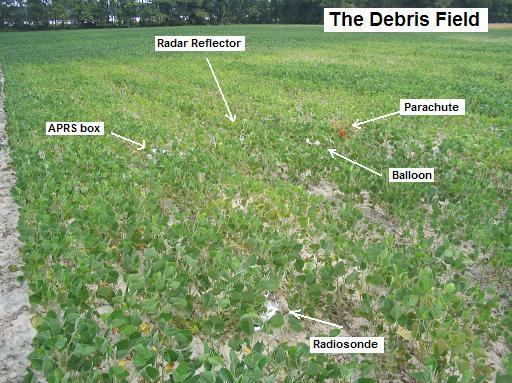
The next photo is what the complete recovered system looked like after dragging it out of the Soybean patch and displayed along the roadside.
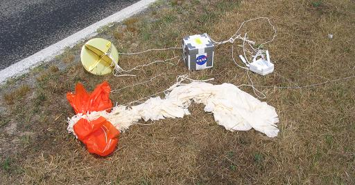
RAPID DESCENT! On recovery it was easy to see why the descent rate was at over 4000 feet per minute. THe Parachute was hopelessly wrapped by its own shrowds. As a result, this system came down from altitude at a high rate of speed and the shock of the direct impact with the hardened drought-dried dirt was a severe impact. This shock separated the GPS from its cable and that explains why the posit went to all zeros once the payload landed.
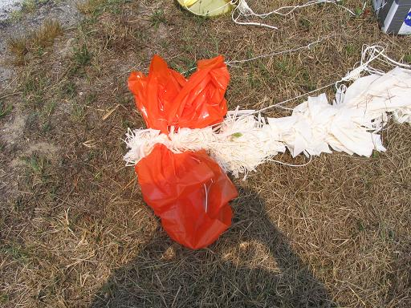
FADE-CIRCLE TECHNIQUE: The above technique relies on many reports from many radio operators. Many times, you cannot find others to give you data (or even folks who understand what it means to "go listen on the reverse"... In this case, if you are on your own, the FADE circle technique below can allow you to find the signal on your own.
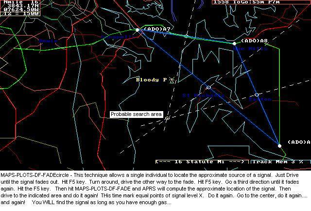
The FADE-CIRCLE technique is a classic technique used by the Civil Air Patrol for rapidly finding a signal using only your omni 2-way radio. All you need is to find 3 places of EQUAL signal strength. In an AIRPLANE with no signal strength meter, this is best found by where the signal fades out. Thus the FADE-CIRCLE name.
But with HAM radio, if you have a signal strength meter, just drive to 3 equal signal points. Initially, you judge equal signals as where the signal just fades in or out. Once you get close, then equal signal points may be where your S meter just starts to be maxed out.. Notice below the difference between the 12 sqmi circle area based on initial signal (or faded-out signal) and the 1/4 sqmi area where the S meter is full scale.. This 50 to 1 dynamic range using just your mobile and it's S meter demonstrates the power of this technique. Then switch to your HT with and without it's antenna for the last several hundred yards and keep homing in. If you are running APRSdos mobile, just a single F5 keystroke marks each point and lets you rapidly keep driving to the next one. Each time you get three points, then hit MAPS-PLOTS-DF-OMNI to let APRS compute the best guess location of the center... then go there and do it again!
Sure this is a crude method, but IT WORKS! You must use your knowledge of radio propogation and local terrain to evaluate the "equality" of equal signal locations, but it DOES work. As you get closer to the source, you simply reduce your gain (or even remove your antenna as you get real close) so that you can still find equal signal strength points while very close...
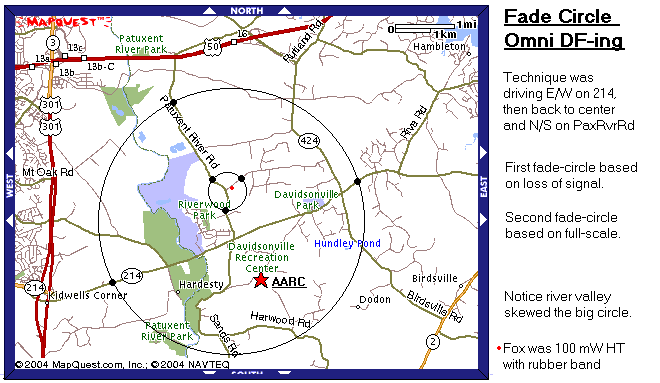
You dont even need APRS. You dont need anything but a receiver and a map. The above map shows our Club fox hunt. After a 20 minute talk about the Fade Circle technique, members were encouraged to find my HT on their way home from the meeting. Three people found the HT in the dark in only 15 minutes using nothing but their Mobile rigs and HT's. Click here to see another team's solution. You can do one of these after every meeting. Set the HT to 100 milliwatts, hang it on a tree limb by the side of the road. My VX-2R super-tiny HT lasts 2.5+ Hrs with constant PTT. Well long enough to drop off on the way to the meeting for a fox hunt after.
The Naval Academy is a registered user of APRS and WinAPRS. The purpose of this web page is to show several applications currently in use at this site and should not be considered as an advertisement or an endorsement of any commercial product.
{kind=link}